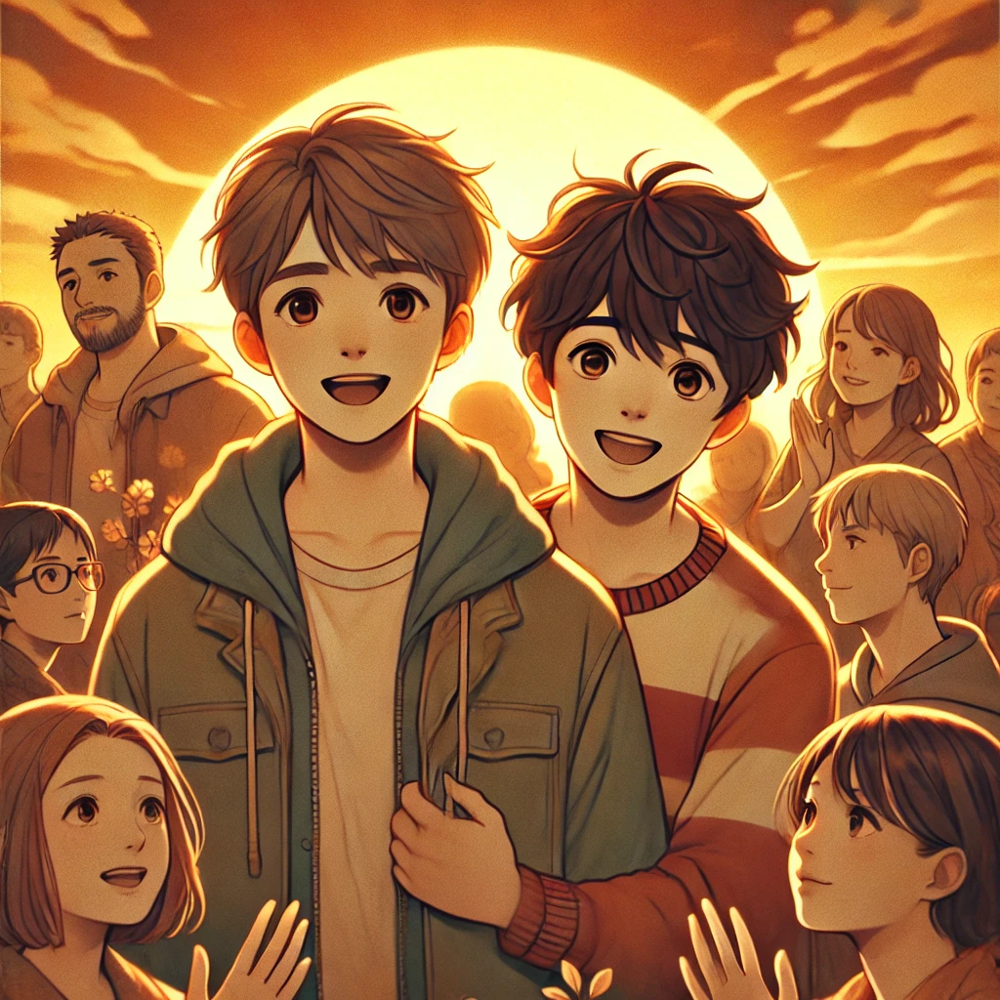

작가
김려령
출판일
2014년
감상평에 대한 AI그림
소외된 이들이 서로를 이해하며 성장하는 과정을 따뜻하게 그려냈고, 완득이와 동주의 유쾌한 갈등 속에서 진정한 가족과 사랑의 의미를 되새기게 되었다.

감상평에 대한 AI평가
완득이와 동주의 관계 속에서 갈등이 있지만, 결국 서로를 이해하고 성장한다는 점에서 인간적인 유대감과 공동체의 힘이 강조된다는 느낌을 받았다.
✨완득이와 동주의 관계 속에서 갈등이 있지만, 결국 서로를 이해하고 성장한다는 점에서 인간적인 유대감과 공동체의 힘이 강조된다는 느낌을 받았다.